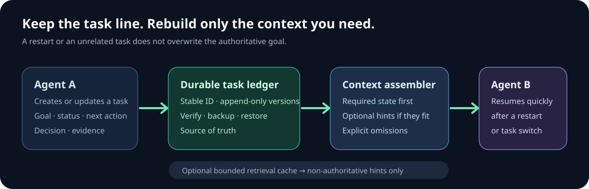
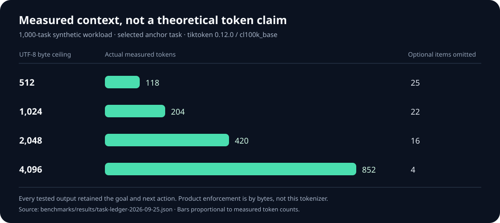

Local-first · Rust · CLI + MCP
Keep the task,
not the whole conversation.
A durable record of what an AI agent is trying to accomplish, what was decided, and what to do next. Resume after interruptions or unrelated work with only the context this task needs.

Durable task ledger
Goals, completion criteria, status, owner, decisions, dependencies, and next actions live in versioned local records outside the evicting memory cache.
Budgeted context
The current task is loaded first. Related tasks, decisions, notes, and memory hints are selected under a conservative byte ceiling; omitted optional items are counted.
Recoverable history
Updates use append-only version files, checksums, and periodic checkpoints. Verify, backup, and restore commands support long-term operation.
A measured 1,000-task workload
One selected task remained readable after 999 unrelated tasks. On an Apple M4 with a warm filesystem cache, its 2,048-byte context took 34.23 ms median over 11 release-CLI runs. It contained 420 cl100k_base tokens; naively concatenating every paginated task summary contained 94,701 tokens under the same encoding. This is one synthetic workload and a deliberately naive baseline, not a universal token-savings claim.

See the methodology and limits and raw result. Cache-corruption survival and backup/restore also passed in this temporary run.
Start in a local project
cargo build --release --bin contextspindle
./target/release/contextspindle init .
./target/release/contextspindle task create "Ship the release" --criteria "Tests pass and release is published"
./target/release/contextspindle task inbox 10
./target/release/contextspindle task context TASK_ID 2048The same task operations are available to MCP clients. See the README and agent protocol for the complete workflow.
What the guarantee does—and does not—mean
A task written to the ledger is not evicted when the bounded memory cache fills. The software cannot preserve a task that an agent never records, and no local disk can guarantee multi-year survival without off-device backups. Context budgets are conservative UTF-8 byte limits, not exact counts for a particular model tokenizer.
Supported task-write platforms are macOS and Linux. Historical memory research, benchmark conditions, and limitations remain available in the repository; they are not claims about the new task-continuity workflow.